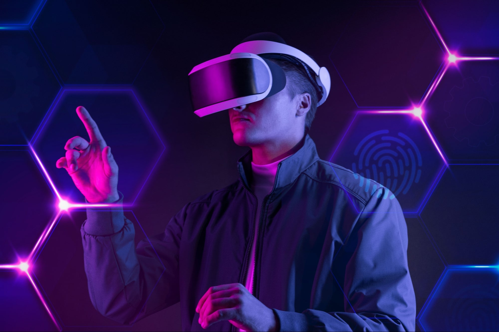
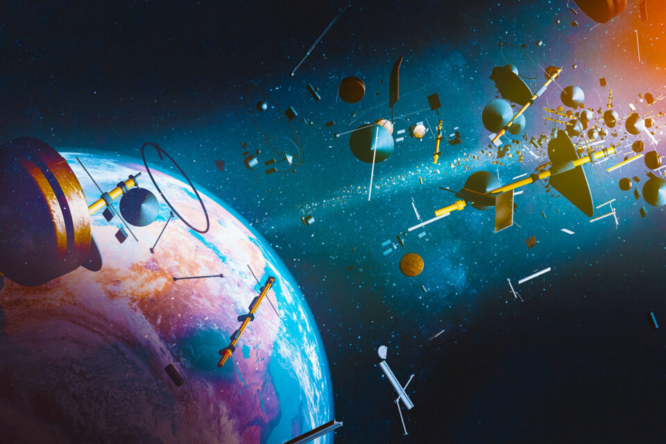

Title: The Future of Technology: Exploring Cutting-Edge Innovations
Introduction:
Welcome to our blog on the exciting world of cutting-edge technological innovations! In this article, we will
delve into some of the most mind-blowing advancements that are shaping the future of technology. From
artificial intelligence and quantum computing to biotechnology and space exploration, the possibilities seem
limitless. Let's embark on a journey to explore the revolutionary inventions that will redefine how we live,
work, and interact in the years to come.

Quantum Computing Quantum computing promises unprecedented computational power, capable of solving problems that are currently impossible for classical computers. As quantum technology matures, we'll explore its potential applications in cryptography, drug discovery, climate modeling, and optimizing complex systems.

Biotechnology and Genetic Engineering The intersection of technology and biology has opened up new frontiers in biotechnology and genetic engineering. Gene editing tools like CRISPR have the potential to cure genetic diseases, enhance agricultural productivity, and even pave the way for human enhancements. We'll discuss the ethical implications and potential risks associated with these groundbreaking developments.

Internet of Things (IoT) and Smart Cities As the IoT continues to expand, everyday objects are becoming interconnected, creating smart homes and smart cities. We will delve into the benefits of IoT, including improved efficiency, convenience, and sustainability. However, we'll also address concerns related to data privacy and cybersecurity.
Virtual and Augmented Reality Virtual Reality (VR) and Augmented Reality (AR) are revolutionizing the way we experience digital content and interact with the world. From immersive gaming experiences to practical applications in education, training, and remote collaboration, VR and AR are transforming various industries.

Renewable Energy and Sustainability The future of technology is intrinsically linked to sustainability. Innovations in renewable energy, such as solar, wind, and tidal power, are crucial for mitigating climate change. We'll explore the latest advancements in clean energy technologies and their potential to reshape our energy landscape.
Space Exploration and Beyond Humanity's fascination with space exploration is driving technological breakthroughs. Private space companies are pushing the boundaries of rocketry and space travel, while efforts to establish colonies on the Moon and Mars are becoming increasingly tangible. We'll discuss the potential benefits and challenges of space exploration.

Conclusion: The future of technology is an exciting and transformative journey, one that holds immense promise for shaping a better world. From the fusion of AI and biotechnology to the mysteries of quantum computing and the vast possibilities of space exploration, these cutting-edge innovations have the potential to revolutionize industries, improve lives, and push the boundaries of human knowledge. However, with such immense power comes a responsibility to address ethical concerns and ensure that these technologies are harnessed for the collective good. As we move forward, let's keep an eye on the horizon and embrace the remarkable possibilities that lie ahead.
Written on 2023-01-29
Featured Post

10 Book Reading Habits to Cultivate for a Lifetime of Learning and Enjoyment

The Powerful Connection between Exercise and Mental Well-being

Mastering a New Skill: A Year of Learning Experiments

Exploring Career Paths: A Guide for High School Students